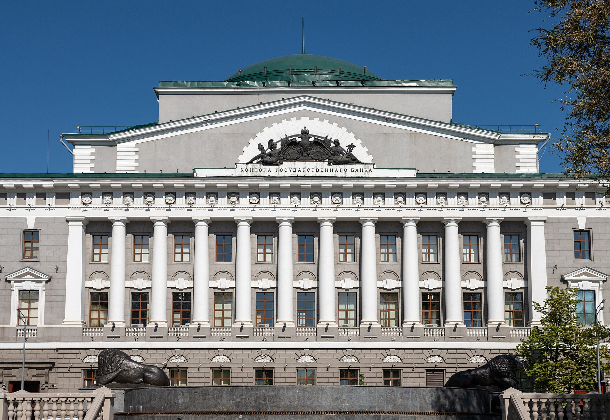
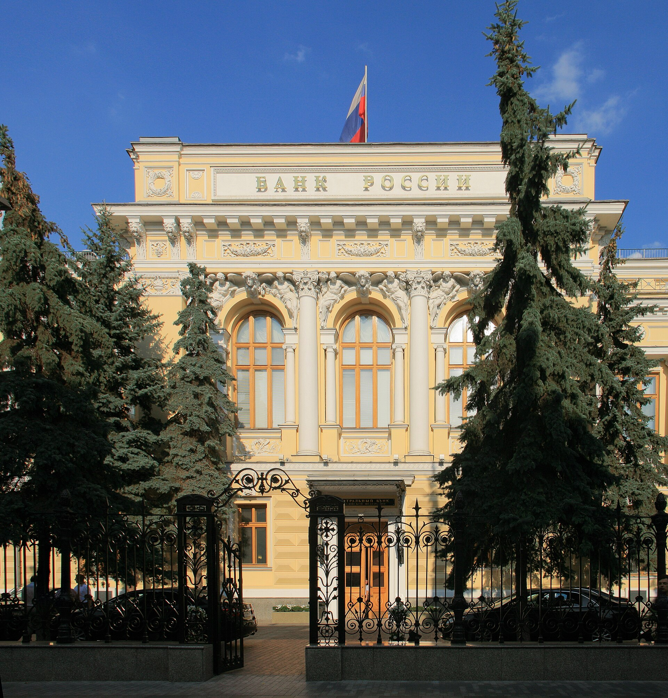
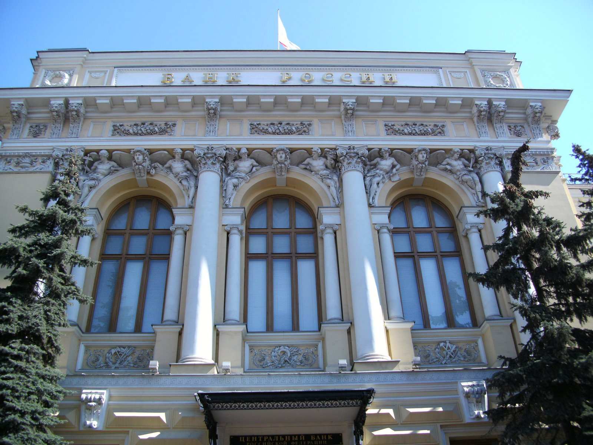
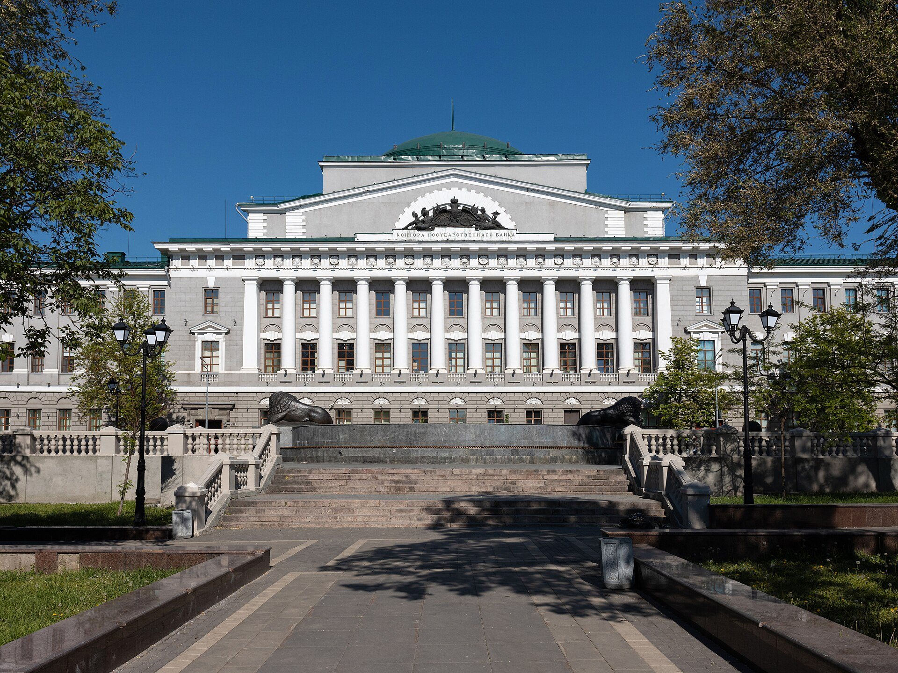

Разблокируем счета по 115-ФЗ
Работаем только с ИП и ООО. С физическими лицами не работаем.
Составим ответ банку, соберём документы и дойдём до комиссии Банка России. По всей России, от 35 000 ₽.
Операции приостановлены Счёт заморожен 0:00Почему блокируют по 115-ФЗ
Знать причину — значит правильно выстроить защиту. Банк ограничивает счёт, когда видит операции без понятного экономического смысла или не получает пояснений на свой запрос. Снять ограничения можно, если документально показать реальность деятельности.
-
Что видит банк. Быстрый транзит средств через счёт без видимой хозяйственной цели: моментальный вывод средств или оплата мнимым контрагентам.
Что делаем мы. Показываем экономический смысл: договоры, акты, цепочку поставки. Банку нужна логика, а не оправдание.
-
Что видит банк. Операции, не соответствующие профилю бизнеса или не имеющие, по мнению банка, экономического смысла.
Что делаем мы. Сверяем операции с реальными договорами и видом деятельности и даём объяснение, которое банк сможет принять.
-
Что видит банк. Ваши контрагенты находятся в реестре системы ЗСК ЦБ или имеют признаки «однодневок».
Что делаем мы. Подтверждаем реальность сделки и вашу осмотрительность при выборе контрагента.
-
Что видит банк. Систематическое снятие наличных свыше установленных порогов без документального обоснования.
Что делаем мы. Объясняем, на что ушла наличность, и подкрепляем это первичкой: расходными ордерами, чеками, ведомостями.
-
Что видит банк. Много одинаковых мелких переводов вместо одного крупного.
Что делаем мы. Объясняем причину: график оплаты, договорные этапы, специфика вашей отрасли.
-
Что видит банк. Банк направил запрос, но клиент не ответил в установленный срок, предоставил неполный или некорректный пакет документов, либо ответ был формальным.
Что делаем мы. Готовим полный ответ под каждый пункт запроса и подбираем документы так, чтобы закрыть вопросы банка.

Причины в вашем случае могут быть другими. Банк часто называет её расплывчато, поэтому первое, что мы делаем, это разбираем уведомление и выписку.
Дорого? Посчитайте простой
Услуга стоит от 35 000 ₽. Укажите, сколько денег проходит через счёт за день и сколько дней вы уже без доступа. Калькулятор покажет, сколько оборота стоит на паузе.
1 400 000 ₽
оборота стоит на паузе, пока счёт заблокирован.
Стоимость нашей работы от 35 000 ₽ — это 2,5 % от этой суммы.
Вернуть доступ к счётуНаписать банку можно и самому
Сами
- Письмо в свободной форме, которое не отвечает на вопрос, заданный банком.
- Объяснение, которое читается как признание.
- Документы разложены не по тем операциям, которые вызвали подозрение.
- Повторное обращение с теми же доводами редко что-то меняет.
С нами
- Сначала смотрим запрос и выписку по счёту: делаем первичный анализ и понимаем, что не понравилось банку.
- Отвечаем на запрос и прикладываем документы.
- Если банк не реабилитирует клиента, пишем жалобу в Банк России.
- Берём дела, где видим путь разблокировки и снятия ограничений. Высокая доля разблокировок у нас потому, что мы честно говорим о шансах заранее.
Как возвращаем доступ

-
Разбираем ситуацию
Вы присылаете уведомление банка и выписку. Мы называем вероятную причину блокировки и честно оцениваем шансы.
-
Собираем пакет
Договоры, акты, переписка с контрагентами, пояснения по спорным операциям. Подскажем, где взять то, чего не хватает.
-
Отвечаем банку
Готовим письменные пояснения под конкретные операции и подаём вместе с документами.
-
Если банк отказал, идём выше
Готовим жалобу в Банк России и обращение в межведомственную комиссию (МВК), которые рассматривают споры клиентов с банками по блокировкам.
-
Закрепляем результат
Объясняем, какие операции снова вызовут вопросы, чтобы блокировка не повторилась.
Разблокировка счёта
от 35 000 ₽
Окончательную сумму назовём после разбора уведомления и выписки: она зависит от банка и причины блокировки.
Узнать цену для моего случаяВ стоимость входит
- разбор уведомления и выписки;
- список документов под вашу ситуацию;
- письменные пояснения для банка;
- подача и сопровождение ответа;
- обращение в комиссию Банка России, если банк отказал.
Скидка за объём
Если заблокированы несколько счетов или несколько ваших компаний, цена за каждый следующий ниже. Условия назовём после разбора.
Работаем в любом регионе
ИП и ООО. Вы можете быть в Калининграде, а банк в Москве. Все документы и переписка идут удалённо, ездить никуда не нужно.
Если вам нужна разблокировка сразу для нескольких счетов, напишите, и посчитаем со скидкой.


Частые вопросы
Не нашли свой случай? Напишите, ответим по существу.
Спросить в TelegramВы гарантируете разблокировку?
Нет, и никто не вправе это обещать: решение принимает банк, а в споре комиссия Банка России. Мы заранее смотрим документы и говорим, какие шансы. Если их нет, скажем сразу, чтобы вы не тратили деньги.
Сколько времени это займёт?
Срок зависит от банка и причины блокировки. После разбора вашего случая назовём реалистичный срок, а не красивый.
Что нужно, чтобы начать?
Уведомление или письмо банка, выписка по счёту за период, о котором спрашивает банк, и основные договоры. Если чего-то нет, подскажем, где это взять.
Дорого, проще самому написать в банк
Можно. Но пока вы пишете и ждёте ответ, оборот стоит. Посчитайте это в калькуляторе выше: часто несколько дней простоя дороже всей услуги. А повторное обращение с теми же доводами обычно не помогает.
Как работает скидка за объём?
Если заблокированы несколько счетов или несколько компаний, стоимость каждой следующей разблокировки ниже. Точные условия называем после разбора ваших дел.
Вы работаете в моём регионе?
Да, по всей России. Всё делаем дистанционно: документы, переписка и согласования идут через мессенджер и почту.
Опишите ситуацию, ответим сегодня
Достаточно названия банка и пары строк о том, что написал банк. Остальное запросим сами.
- Telegram@suzanna1985
- Телефон+7 937 736-36-96
- MAXНаписать в MAX
- Почтаisn_consult_group@mail.ru